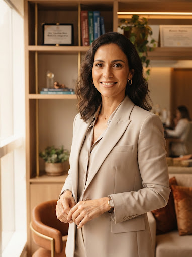
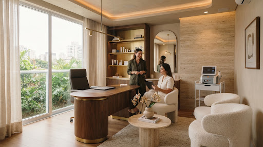

Naturalidade
Cuidar sem apagar suas características, expressões e identidade.
Medicina, estética e cuidado individual
Naturalidade, regeneração e tecnologia em uma abordagem médica personalizada para mulheres que desejam cuidar da aparência, da saúde e da confiança sem perder a própria identidade.

Cuidar sem apagar suas características, expressões e identidade.
Estimular processos naturais sempre que houver indicação individual.
Selecionar recursos de acordo com cada história, necessidade e avaliação.
Identidade e essência
Você quer se olhar no espelho e reconhecer uma aparência que combine com sua energia, sua história e o momento que está vivendo. O cuidado não precisa ser sobre excessos. Pode ser sobre proporção, saúde, confiança e escolhas conscientes.
Uma jornada individual
Uma abordagem estruturada para compreender antes de indicar e acompanhar depois de cuidar.
Compreensão das queixas, rotina, histórico e objetivos de cada paciente.
Definição de prioridades e possibilidades adequadas ao seu momento.
Conhecimento médico, técnicas e tecnologias usados com responsabilidade.
Orientações e observação da evolução conforme o plano definido.
Áreas de cuidado
Saúde, aparência e bem-estar não vivem separados. A avaliação ajuda a construir um caminho coerente para cada fase.
Cuidados para valorizar os traços, a qualidade da pele e a harmonia individual, sempre a partir de avaliação médica.
Conversar sobre esta áreaUm olhar para saúde, composição corporal, disposição e fatores que influenciam o bem-estar em diferentes momentos.
Conversar sobre esta áreaAcompanhamento ginecológico atento às necessidades e transformações das diferentes fases da vida feminina.
Conversar sobre esta áreaExperiência e inovação
Conheça conceitos e experiências desenvolvidos dentro do ecossistema Tatty Berno. A indicação e a composição de cada cuidado são individuais.
Uma técnica criada pela Dra. Tatty Berno, orientada por planejamento individual e pelo respeito à expressão de cada paciente.
Uma experiência de cuidado com foco em contorno, proporção e naturalidade, planejada após avaliação individual.
Tecnologia e planejamento reunidos para valorizar a beleza natural do rosto de acordo com as necessidades observadas.
O centro tecnológico da Clínica Tatty Berno, criado para integrar diferentes recursos ao plano de cuidado de cada paciente.
A indicação de procedimentos, tecnologias e número de sessões depende de consulta e avaliação individual.
Trajetória e propósito
Há mais de duas décadas, a Dra. Tatty Berno constrói uma trajetória que une medicina, atenção à saúde feminina e busca constante por novas tecnologias. Seu trabalho parte de uma convicção: um bom cuidado respeita o que torna cada mulher única.
Clínica Tatty Berno

Um ambiente preparado para oferecer acolhimento, privacidade e tranquilidade em cada etapa do atendimento.
Dúvidas frequentes
Informações iniciais sobre a consulta e a construção do seu plano de cuidado.
É o momento de conhecer suas queixas, histórico, rotina e expectativas. A partir dessa conversa e do exame clínico, a médica pode orientar os próximos passos.
Não. A indicação considera características individuais, prioridades e o momento de cada paciente. Por isso, não há um protocolo único para todas.
Você pode compartilhar suas preferências, mas a indicação adequada só é definida após avaliação médica.
A escolha depende da avaliação, dos objetivos e das características observadas. A equipe explica as possibilidades quando houver indicação.
A clínica está localizada em Cacoal, Rondônia. Use o botão “Ver localização” para abrir a rota oficial no Google.
Clique em um dos botões de WhatsApp desta página. A equipe vai orientar sobre o tipo de atendimento, datas e horários disponíveis.
Converse com a equipe da Dra. Tatty Berno e agende uma avaliação individual.
Agendar avaliação pelo WhatsApp Você será direcionada para o atendimento da clínica.